Storm surge at the building.
ASSEMBLED REVIEW COPY
Eight moments, fully assembled.
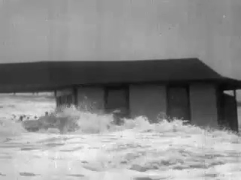
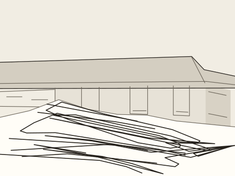
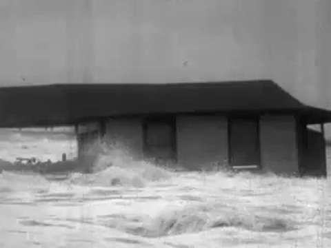
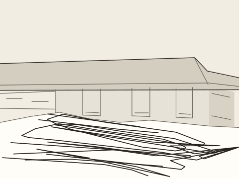
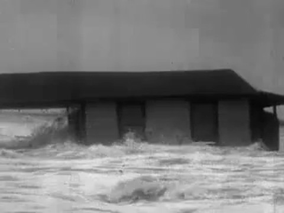
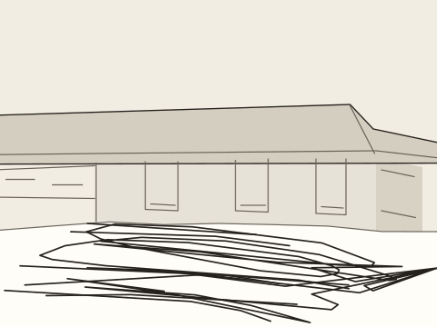
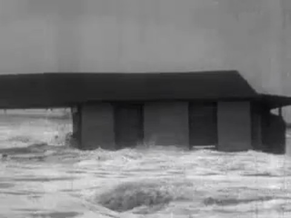
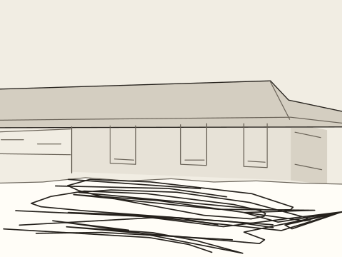
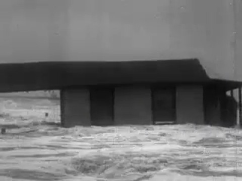
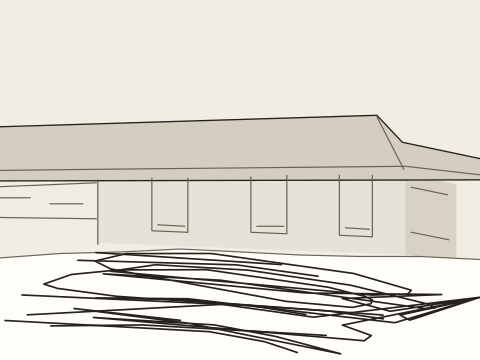
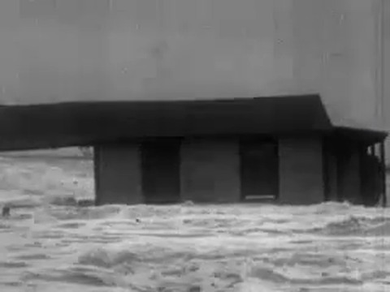
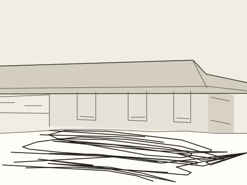
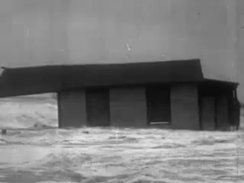
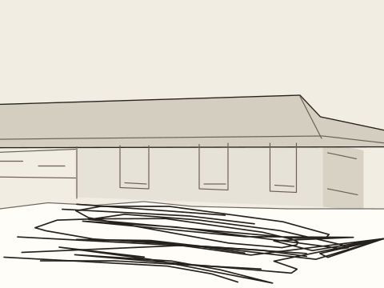
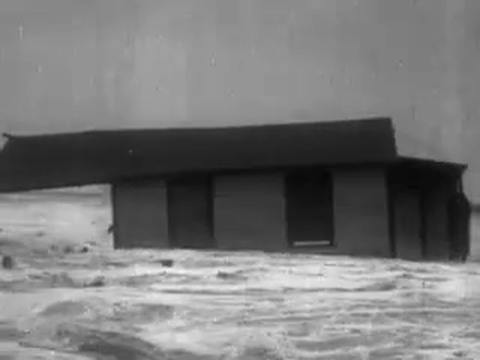
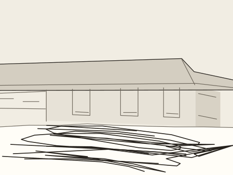
References and review
Quick, Draw! key 4791481996935168, all seven original strokes. Quick, Draw! contributors / Google Creative Lab, CC BY 4.0. The building and occluding water boundary were drawn by agent against the source; the glyph is an abstraction of water.
Archive: Shock Troops of Disaster: The Story of the New England Hurricane (1938), clip-relative31.131–34.201 seconds. Reported archive rights were absent from the candidate manifest.
Timeline · Crest keys and correspondence · Measured camera translation · Assembly checks · Independent review pending.
SAM2.1 ran upstream, but its mask switches from water to the building; a persistent single-object fit is not established. Recognition and normal-speed playback approval remain unrun. Camera alignment is2D translation and the bounded foam texture drift is not tracked physical water particles. No training ran.